まるみ
やわらかな丸みの甲丸仕上げ。
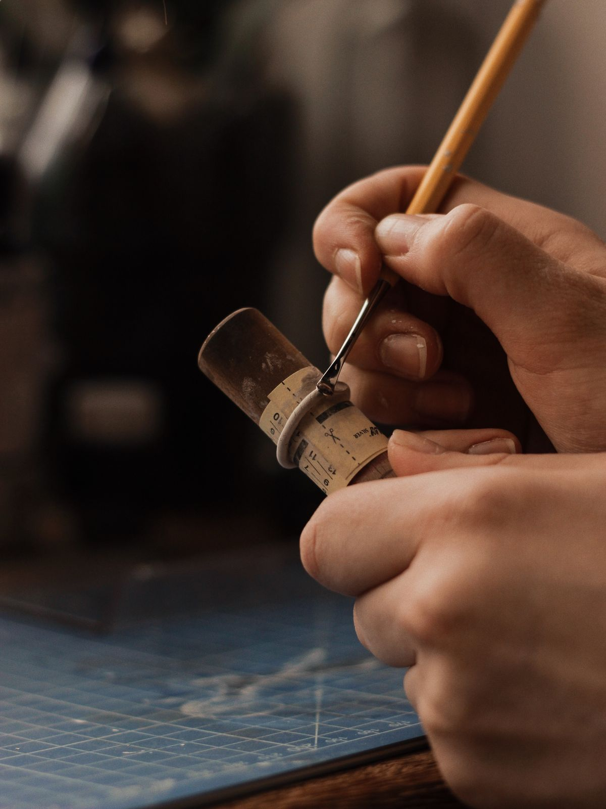
鎌倉の、小さな指輪づくりの工房。
A MOMENT TO KEEP
とん、とん。木の机に響く、指輪づくりの音。
隣で真剣になる横顔も、思わず笑った瞬間も。
一枚の銀からつくるのは、
これからの日々に寄り添う、小さな宝物。
つくる時間ごと、持ち帰ってください。
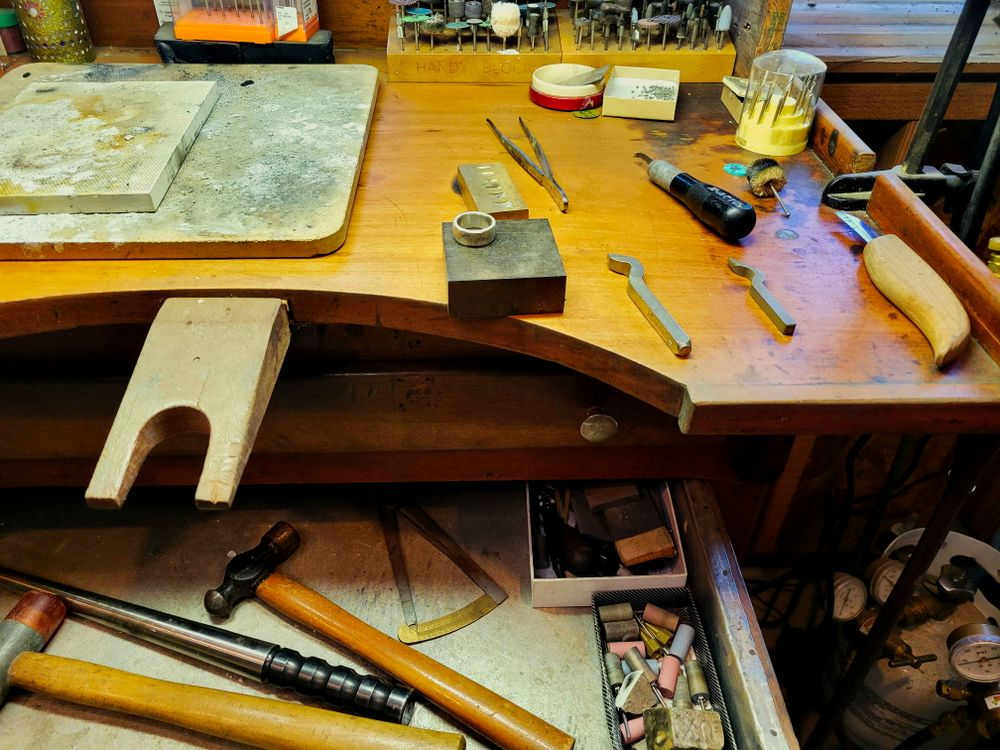
使い込まれた道具を手に、ゆっくりと。
会話も、真剣になる時間も楽しんで。
道具を持つのが初めてでも大丈夫。
デザイン選びから仕上げまで、お手伝いします。
01 / OUR RINGS
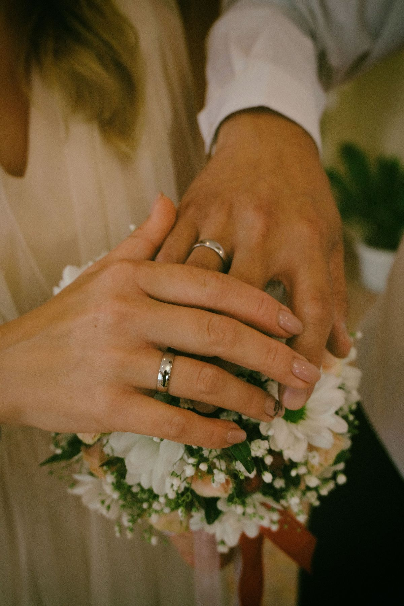
お揃いでも、それぞれの好みでも。
当日、サンプルを見ながらお選びいただけます。
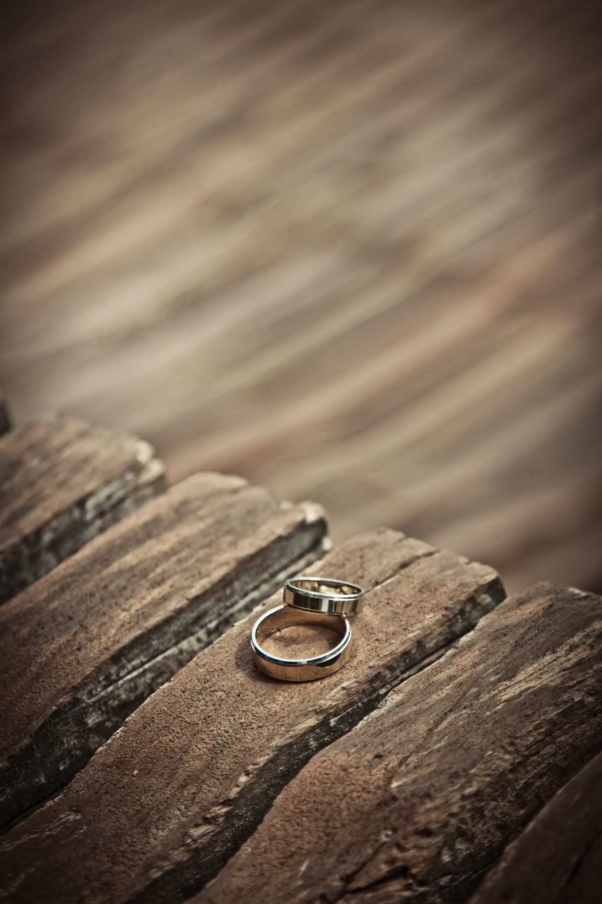
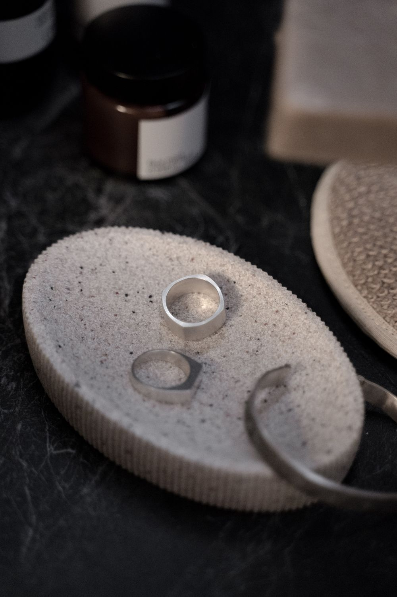
写真は仕上がりの雰囲気の参考です。
体験で選べる形・幅は、下の図でご紹介します。
やわらかな丸みの甲丸仕上げ。
ひと打ちごとに表情が生まれる槌目。
指輪の幅を比べる 模式図
2mm：細めの幅で、さりげなく身につけたい方に。
形・幅は当日選べます。どちらも体験料金は同じです。※架空の体験プランです。デザインは当日選べる設定です。
02 / HOW TO MAKE
選んで、叩いて、少しずつ。
約90分のものづくりを、のぞいてみましょう。
写真は制作風景のイメージです。
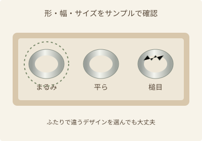
サンプルを見ながら、形・幅・サイズを選びます。
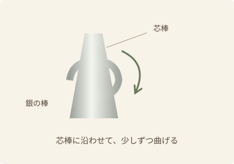
芯棒に添えて、銀を少しずつ丸く曲げます。
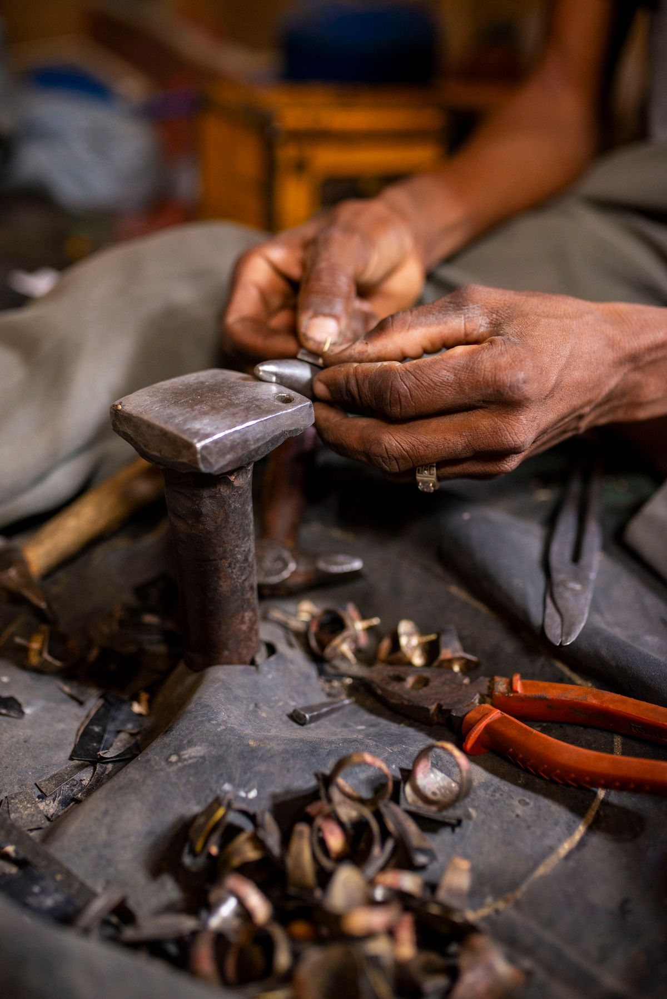
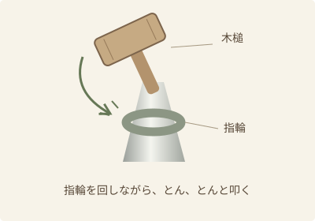
木槌で形を整え、好みの模様をつけます。
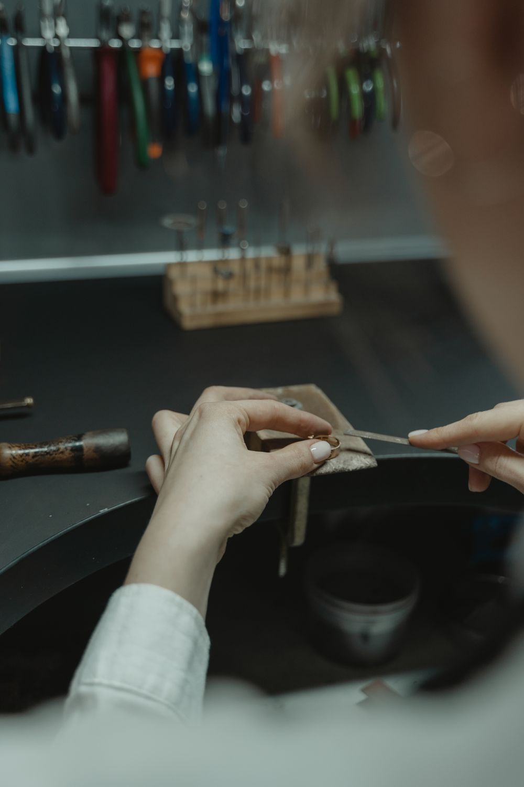
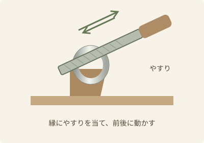
やすりで縁を整え、やさしい着け心地へ。
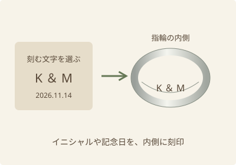
イニシャルや記念日を選び、内側に刻みます。
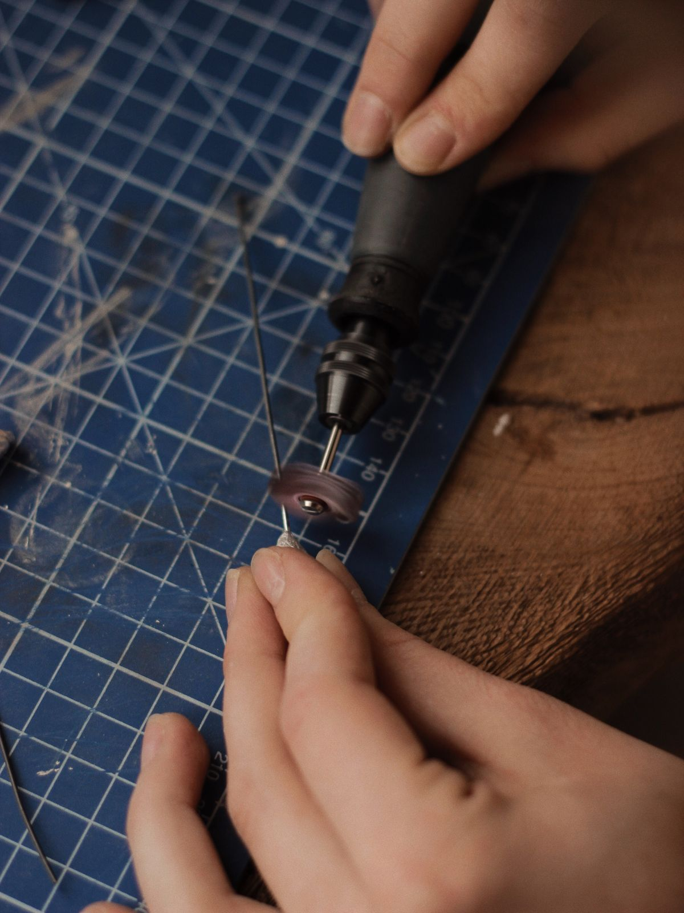
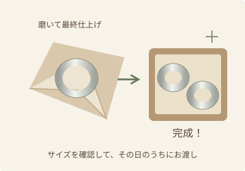
スタッフが最終仕上げ。記念撮影をしてお渡しします。
難しい接合や仕上げは、スタッフがお手伝い。
初めてでも、自分のペースで楽しめます。
03 / QUESTIONS
はい。工具の使い方からスタッフがお手伝いします。難しい接合や最終仕上げはスタッフが担当する設定です。
当日、サンプルを見ながら選べます。二人で違うデザインにしても大丈夫です。
特別な持ち物は不要です。動きやすい服装と、つま先を覆う靴がおすすめです。エプロンは工房で用意します。
こちらのシルバーリング体験は、当日お持ち帰りいただくプランです。
このサイトはデモのため、実際の予約・変更・キャンセルは発生しません。入力内容の外部送信も行いません。
04 / VISIT US
お散歩の途中に立ち寄る、小さな工房。
指輪をつくったあとは、ふたりで街歩きへ。
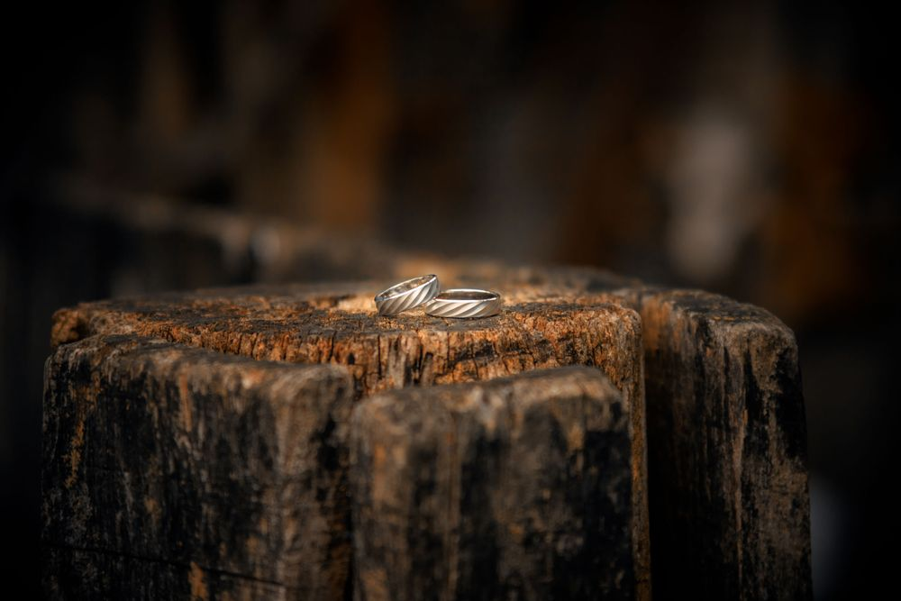
つくった日も、その先も。
ふたりのそばに。